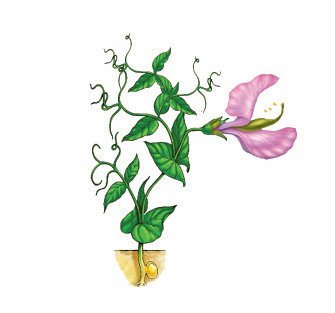
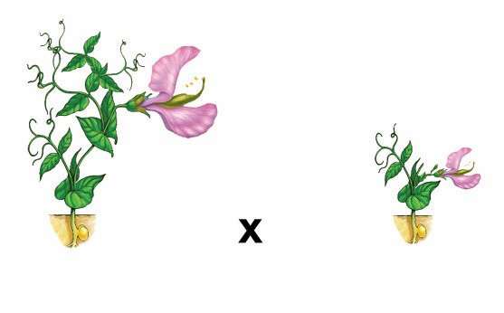
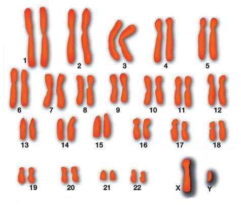

ചിത്രം നിരീക്ഷിക്കൂ.
മാതാപിതാക്കളിൽ നിന്നും സന്താനങ്ങൾക്ക് ചില സവിശേഷതകൾ ലഭിക്കുന്നു
എന്ന് മന ഇലാക്കിയല്ലോ. കൂടാതെ, മാതാപിതാക്കളിൽ നിന്ന് വിഭിന്നമായ ചില
സവിശേഷതകളും സന്താനങ്ങളിൽ കാണപ്പെടുന്നില്ലേ?
ചിത്രത്തിൽ നിന്നും അത്തരം വ്യത്യാസങ്ങൾ കണ്ടെത്തൂ.
സന്താനങ്ങളിലെ ചില സവിശേഷതകൾ മാതാവിൽ നിന്നോ പിതാവിൽ നിന്നോ
ലഭിച്ചതാവാം. മാതാപിതാക്കൾക്കില്ലാത്ത സ്വഭാവങ്ങളും സന്താനങ്ങളിലുണ്ടാകാം.
ജീവശാസ്ത്രം - ത
മാതാപിതാക്കളുടെ സവിശേഷതകൾ സന്താനങ്ങളി ഏലയ് ക്ക ് വ്യാപ ര ഇ ക്ക ഉ ന്ന ത ആണ് പാര മ്പ ര ്യം
(ഒലൃലറശ്യേ). മാതാപിതാക്കളിൽ നിന്ന് വ്യത്യസ്തമായി സന്താനങ്ങളിൽ പ്രകടമാകുന്ന സവിശേഷത
കളാണ് വ്യതിയാനങ്ങൾ (ഢമൃശമശേീി)െ. പാരമ്പര്യത്തെയും വ്യതിയാനങ്ങളെയും കുറിച്ച് പ്രതിപാദിക്കുന്ന ശാസ്ത്രശാഖയാണ് ജനിതകശാസ്ത്രം
(ഏലിലശേര)െ.
ജനിതകശാസ്ത്രത്തിന്റെ ഉദയം
ഗ്രിഗർ ജൊഹാൻ
മെൻഡൽ
1822 ൽ ഓസ്ട്രിയയിലെ ബ്രൺ എന്ന
സ്ഥലത്ത് (ഇന്നത്തെ ചെക് റിപ്പഞ്ഞി
ക്കിൽ) ജനിച്ചു. പൈസം സറ്റൈവം
എന്ന ശാസ്ത്രനാമമുള്ള തോട്ടപ്പയ
റിലെ 7 ജോഡി വിപരീതഗുണങ്ങളുടെ
പാരമ്പര്യപ്രേഷണം
മെൻഡൽ
പഠനവിധേയമാക്കി. ചെടികളുടെ
ഉയരം, പൂവിന്റെ സ്ഥാനം, വിത്തിന്റെ
ആകൃതി, വിത്തിന്റെ ആവരണത്തിന്റെ
നിറം, ബീജപത്രത്തിന്റെ നിറം, ഫലത്തിന്റെ ആകൃതി, ഫലത്തിന്റെ നിറം
എന്നീ സ്വഭാവങ്ങളുടെ പ്രേഷണത്തെ
വിലയിരുത്തി അദ്ദേഹം പാരമ്പര്യ
നിയമങ്ങൾ ആവിഷ് ക രിച്ചു. പാരമ്പര്യപ്രേഷണ പഠനങ്ങളിലൂടെ ഒരു
സ്വഭാ വ ത്തെ നിയ ്രന്തി ക്ക ആൻ ഒരു
ജോഡി ഘടകങ്ങളുണ്ടെന്ന് വിശദീകരിച്ച അദ്ദേഹം അവയെ പ്രതീകങ്ങളുപയോഗിച്ച് ചിത്രീകരിച്ചു. 1866 ൽ
അദ്ദേഹത്തിന്റെ കണ്ടെത്തലുകൾ
പ്രസിദ്ധീകരിച്ചുവെങ്കിലും വേണ്ടത്ര
പരിഗണന ലഭിച്ചില്ല. 1884 ൽ അദ്ദേഹം
അന്തരിച്ചു. പിൽക്കാലത്തുണ്ടായ
ഗവേഷണങ്ങളുടെ അടിസ്ഥാനത്തി
ലാണ് അദ്ദേഹത്തിന്റെ കണ്ടെത്തലു
കളുടെ പ്രാധാന്യം ലോകം ശ്രദ്ധിച്ചത്.
98
ഗ്രിഗർ ജൊഹാൻ മെൻഡൽ (ഏൃലഴീൃ ഖീവമി ങലിറലഹ)
എന്ന ശാസ്ത്രജ്ഞൻ തോട്ടപ്പയർചെടിയിൽ (ഗ്രീൻപീസ്) നടത്തിയ വർഗസങ്കരണ പരീക്ഷണങ്ങളുടെ അടിസ്ഥാനത്തിൽ എത്തിച്ചേർന്ന നിഗമനങ്ങളാണ് ജനിതകശാസ്ത്രത്തിന് അടിത്തറ പാകിയത്. അതിനാൽ
അദ്ദേഹത്തെ ജനിതകശാസ്ത്രത്തിന്റെ പിതാവായി
കണക്കാക്കുന്നു.
ചിത്രം 6.1 തോട്ടപ്പയർ (പൈസം സറ്റൈവം)
മെൻഡലിന്റെ പരീക്ഷണങ്ങൾ
പയർചെടികളിൽ ഉയരം എന്ന സ്വഭാവത്തിന്റെ രണ്ട്
വിപരീതഗുണങ്ങളെ അടിസ്ഥാനമാക്കി നടത്തിയ വർഗസങ്കരണപരീക്ഷണത്തെ ഘടകങ്ങളുടെ പ്രതീകങ്ങൾ
ഉപയോഗിച്ച് ചിത്രീകരിച്ചിരിക്കുന്നത് (6.1) നിരീക്ഷിക്കൂ.
Page 27
Figure fig_ch05_p027_01 (Page 27)

Figure fig_ch05_p027_02 (Page 27)

Figure fig_ch05_p027_03 (Page 27)
ജീവശാസ്ത്രം - ത
മാതൃസസ്യങ്ങൾ
ജീനുകളും
അലീലുകളും
ഉയരം കൂടിയത്
ഉയരം കുറഞ്ഞത്
ഠഠ
ഏേബീജകോശങ്ങൾ
ഏ
ഠ
ഠ
ഏ
ഒന്നാംതലമുറ (എ1)
ഉയരം കൂടിയത്
ചിത്രീകരണം 6.1 വർഗസങ്കരണം
സൂചകങ്ങൾ
$
ഈ പരീക്ഷണത്തിൽ പരിഗണിച്ച പയർചെടികളുടെ സ്വഭാവം.
$
ഈ സ്വഭാവത്തിന്റെ വിപരീത ഗുണങ്ങൾ.
$
ഒന്നാംതലമുറയിൽ പ്രകടമായതും അല്ലാത്തതുമായ ഗുണങ്ങൾ.
$
ഉയരംകൂടിയ മാതൃസസ്യത്തിലേയും ഒന്നാം തലമുറ സസ്യത്തിലേയും ഘടകങ്ങളിലെ വ്യത്യാസം.
ഒരു ജോഡി വിപരീതഗുണങ്ങളെ വർഗസങ്കരണത്തിന്
വിധേയമാക്കുമ്പോൾ ഒന്നാം തലമുറയിലെ സന്തതി ക ള ഇൽ
വിപരീതഗുണങ്ങളിൽ ഒന്നുമാത്രം പ്രകടമാവുകയും മറ്റേത്
മറഞ്ഞിരിക്കുകയും ചെയ്യും. ഒന്നാം തലമുറയിൽ പ്രത്യക്ഷപ്പെട്ട
ഗുണത്തെ പ്രകടഗുണം (ഉീാശിമി ഏൃേമശ)േ എന്നും മറഞ്ഞിരുന്നതിനെ
ഗുപ്തഗുണം (ഞലരലശൈ്ല ഋേമശ)േ എന്നും പറയുന്നു.
മാതാപിതാക്കളിൽ നിന്ന്
സ്വഭാവ സവിശേഷത
കൾ സന്താനങ്ങളിലേ
യ്ക്ക് കൈമാറുന്നത്
ലിംഗകോശങ്ങളിലൂടെ
കൈമാറ്റം ചെയ്യപ്പെടുന്ന
ചില ഘടകങ്ങളാണ്
എന്ന് ഗ്രിഗർ മെൻഡൽ
അനുമാനിച്ചു. പിൽക്കാല
പഠനങ്ങളുടെ അടിസ്ഥാ
നത്തിൽ ഈ ഘടകങ്ങൾ
ന്യൂക്ലി യ സ ഇലെ ക്രോമസോമുകളിൽ കാണപ്പെടുന്ന ജീനുകളാണെന്ന്
കണ്ടെ ത്ത ഇ. ഒരു സ്വഭാവത്തെ നിർണയിക്കുന്ന
ജീനിന് വ്യത്യസ്ത തരങ്ങളുണ്ടാകും. ഇവയാണ്
അലീ ല ഉ ക ൾ (അഹഹലഹല)െ.
സാധാ ര ണ യ ആയി ഒരു
ജീനിന് രണ്ട് അലീലുകളാണുള്ളത്. ഉദാഹരണത്തി
ന്, ഉയരം എന്ന സ്വഭാവത്തെ നിർണയിക്കുന്ന
ജീനിന്റെ വ്യത്യസ്ത
അലീ ല ഉക ള ആണ് ഠ,
ഏഎന്നിവ. ഠ എന്ന അലീൽ
ഉയരക്കൂടുതലിനെയും
ഏഎന്ന അലീൽ ഉയരക്കുറ വ ഇനെയും കാണിക്കു
ന്നു. ഒന്നാം തലമുറയിൽ
പ്രകടമാകുന്ന ഗുണത്തെ
നിർണ യ ഇ ക്ക ഉന്ന അലീലിനെ ഇംഗ്ലീഷ് വലിയ
അക്ഷരത്തിലും പ്രകടമാകാത്ത ഗുണത്തെ നിർണയിക്കുന്ന അലീ ല ഇനെ
ചെറിയ അക്ഷരത്തിലും
സൂചിപ്പിക്കും.
ജീവശാസ്ത്രം - ത
ഉയരക്കൂടുതലും ഉയരക്കുറവും ചേർന്ന് ഇടത്തരം ഉയരമുള്ള സസ്യമുണ്ടായില്ല
എന്നതും ഉയരക്കുറവിന് കാരണമായ ഘടകം മറഞ്ഞിരുന്നതും മെൻഡലിനെ
തുടരനേ്വഷണത്തിന് പ്രേരിപ്പിച്ചു.
ഒന്നാം തലമുറ സസ്യത്തിൽ ഉയരക്കുറവിന് കാരണമായ ഘടകത്തിന്
എന്തുസംഭവിച്ചു എന്ന് മന ഇലാക്കുന്നതിന് ഒന്നാം തലമുറ സസ്യത്തെ അദ്ദേഹം
സ്വപരാഗണത്തിന് വിധേയമാക്കി. ഈ പരീക്ഷണത്തിന്റെ ചിത്രീകരണം (6.2)
പൂർത്തീകരിച്ച് സൂചകങ്ങളെ അടിസ്ഥാനമാക്കി വിശകലനം ചെയ്ത് നിഗമനങ്ങൾ സയൻസ് ഡയറിയിൽ എഴുതൂ.
ഒന്നാംതലമുറ സസ്യത്തിന്റെ സ്വപരാഗണം
ഉയരം കൂടിയത്
ഠ
ഏഠ
ഏ
ഠ
ഏ
ത
ബീജകോശങ്ങൾ
ഠ
.............
ഏ
ഠ
ഏ
.......
.......
...........
ഏേ
രണ്ടാംതലമുറ (എ2)
ഉയരം കൂടിയത്
.....................
.........................
........................
ചിത്രീകരണം 6.2 ഒന്നാം തലമുറ സസ്യത്തിന്റെ സ്വപരാഗണം
100
Page 29
Figure fig_ch05_p029_01 (Page 29)
ജീവശാസ്ത്രം - ത
സൂചകങ്ങൾ
$
രണ്ടാം തലമുറയിലെ സസ്യങ്ങളുടെ സ്വഭാവങ്ങൾ.
$
രണ്ടാം തലമുറയിലെ സസ്യങ്ങളും ഘടകങ്ങളും.
$
ഒന്നാം തലമുറയിലെ ഗുപ്തഗുണവും രണ്ടാം തലമുറയും.
മെൻഡലിന്റെ കണക്കെടുപ്പ്
രണ്ടാം തലമുറയിൽ ആകെ ലഭിച്ച 1064 ചെടികളിൽ 787 എണ്ണം ഉയരം കൂടിയവയും 277 എണ്ണം ഉയരം കുറഞ്ഞവയുമായിരുന്നു. ഇവ തΩിലുള്ള അനുപാതം
ഏകദേശം 3:1 ആണ്. പയർചെടിയിലെ മറ്റ് ആറ് വ്യത്യസ്ത സ്വഭാവങ്ങളുടെ
വിപരീതഗുണങ്ങൾ അടിസ്ഥാനമാക്കി അദ്ദേഹം പരീക്ഷണം തുടർന്നു.
ചുവടെയുള്ള പട്ടിക 6.1 പൂർത്തിയാക്കി അനുപാതങ്ങൾ താരതമ്യം ചെയ്യൂ.
മാതൃപിതൃസസ്യങ്ങൾ
ഒന്നാം തലമുറ
രണ്ടാം തലമുറ (സ്വപരാഗണം)
ഏകദേശ
അനുപാതം
.........................
651(വശങ്ങളിൽ), 207(അഗ്രങ്ങളിൽ)
.................
.........................
882(ഉരുണ്ടത്), 299(ചുളുങ്ങിയത്)
.................
പൂക്കളുടെ സ്ഥാനം
വശങ്ങളിൽ ത അഗ്രങ്ങളിൽ
വിത്തിന്റെ ആകൃതി
ഉരുണ്ടത് ത ചുളുങ്ങിയത്
പട്ടിക 6.1 വർഗസങ്കരണപരീക്ഷണവും അനുപാതവും
ഒന്നാം തലമുറയിലെ ഗുപ്തഗുണം രണ്ടാം തലമുറയിൽ പ്രത്യക്ഷപ്പെട്ടതിന്
കാരണമെന്തായിരിക്കും?
ചഠ8833ആശീഹീഴ്യ10(ങ)ഢീഹ2
ലിംഗകോശങ്ങൾ ഉണ്ടാകുമ്പോൾ സ്വഭാവത്തെ നിർണയിക്കുന്ന ഘടകങ്ങൾ
കൂടിക്കലരാതെ വേർപിരിയുന്നതാണ് ഇതിന് കാരണമെന്ന് മെൻഡൽ
അനുമാനിച്ചു. അതായത് ഠ ഏഎന്ന ഒന്നാം തലമുറ സസ്യത്തിൽ നിന്നും
ഉണ്ടാകുന്ന ലിംഗകോശങ്ങളിൽ പകുതി എണ്ണത്തിൽ ഠ യും പകുതി എണ്ണത്തിൽ
ഏയും ആയിരിക്കും.
ഇത്തരം പരീക്ഷണങ്ങളിൽ നിന്നും ഗ്രിഗർ മെൻഡൽ രൂപീകരിച്ച അനുമാനങ്ങൾ ചുവടെ ചേർത്തിരിക്കുന്നു.
ഒരു സ്വഭാവത്തെ നിയന്ത്രിക്കുന്നത് രണ്ട് ഘടകങ്ങൾ ചേർന്നാണ്.
ഒന്നാം തലമുറയിലെ സന്താനങ്ങളിൽ ഒരുഗുണം പ്രകടമാവുകയും
മറ്റൊന്ന് മറഞ്ഞിരിക്കുകയും ചെയ്യുന്നു.
ഒന്നാം തലമുറയിൽ മറഞ്ഞിരിക്കുന്ന ഗുണങ്ങൾ രണ്ടാം തലമുറയിൽ പ്രകടമാകുന്നുണ്ട്.
രണ്ടാം തലമുറയിലെ പ്രകടമായതും മറഞ്ഞിരിക്കുന്നതുമായ ഗുണങ്ങളുടെ അനുപാതം 3:1 ആണ്.
ജീവശാസ്ത്രം - ത
ആദ്യ പരീക്ഷണത്തിൽ ഒരു ജോഡി വിപരീത ഗുണങ്ങളുടെ പ്രേഷണം മാത്രമേ
മെൻഡൽ നിരീക്ഷണ വിധേയമാക്കിയുള്ളൂ. അടുത്ത ഘട്ടത്തിൽ ഒരേ ചെടിയിലെ രണ്ട് ജോഡി വിപരീത ഗുണങ്ങളുടെ പ്രേഷണം നിരീക്ഷണ വിധേയമാക്കി. ഉയരത്തോടൊപ്പം വിത്തിന്റെ ആകൃതിയും പരിഗണിച്ചുകൊണ്ട് മെൻഡൽ
നടത്തിയ വർഗസങ്കരണ പരീക്ഷണം ചിത്രീകരിച്ചിരിക്കുന്നത് നിരീക്ഷിക്കൂ.
ചിത്രീകരണം ഉചിതമായി പൂർത്തിയാക്കൂ.
സൂചകങ്ങളുടെ അടിസ്ഥാനത്തിൽ ചിത്രീകരണം (6.3) വിശകലനം ചെയ്ത്
നിഗമനങ്ങൾ സയൻസ് ഡയറിയിൽ എഴുതൂ.
ഒന്നാം തലമുറ ഉൽപ്പാദിപ്പിക്കുന്ന ബീജകോശങ്ങളിലെ ഘടകങ്ങൾ.
$
രണ്ടാം തലമുറയിലെ സസ്യങ്ങളിലെ
സ്വഭാവങ്ങൾ.
$
മാതൃ പിതൃസസ്യങ്ങളിൽ നിന്ന് വ്യത്യസ് ത മ ആയി രണ്ടാം തലമുറയിൽ
കാണപ്പെട്ട സ്വഭാവങ്ങൾ.
മാതാപിതാക്കളിൽ പ്രകടമാവാത്ത സ്വഭാവങ്ങൾ സന്താന ങ്ങ ള ഇൽ കണ്ടു വ രുന്നത്
എന്തുകൊണ്ടായിരിക്കും എന്ന പ്രശ്നത്തിന്
ഉത്തരം കണ്ടെത്താൻ ഈ പരീക്ഷണത്തി
ലൂടെ മെൻഡലിന് കഴിഞ്ഞു.
ഓരോ സ്വഭാവവും പരസ്പരം കൂടിക്കലരാതെ
സ്വതന്ത്രമായി അടുത്ത തലമുറയിലേയ്ക്ക്
വ്യാപരിക്കുന്നതുകൊണ്ടാണ് സന്താനങ്ങളിൽ
വ്യതിയാനങ്ങൾ (മുൻ തലമുറയിലില്ലാത്ത
സ്വഭാവങ്ങൾ) രൂപപ്പെടുന്നത് എന്ന് മെൻഡൽ
വിശദീകരിച്ചു.
മെൻഡൽ തിരിച്ചറിയപ്പെടുന്നു
പാരമ്പര്യസ്വഭാവങ്ങളുടെ പ്രേഷണത്തെക്കുറിച്ച്
ഏറ്റവും ശാസ് ്രതീയമായ നിഗമനങ്ങളാണ്
മെൻഡൽ
അവതരിപ്പിച്ചത് .
എന്നാൽ
മെൻഡലിന്റെ നിഗമനങ്ങളെ അന്ന് ശാസ്ത്ര
ലോകം തള്ളിക്കളഞ്ഞു. കാൾ കോറൻസ് ,
എറിക് ഷെർമാക്, ഹ്യൂഗോ ഡീവ്രീസ് എന്നീ
ശാസ്ത്രജ്ഞൻമാർ പാരമ്പര്യസ്വഭാവങ്ങളുടെ
പ്രേഷണത്തെക്കുറിച്ച് സ്വതന്ത്രമായി സമാനമായ
പരീക്ഷണ നിരീക്ഷണങ്ങൾ നടത്തി. ഈ
പഠനഫലങ്ങൾ പ്രസിദ്ധീകരിക്കുന്നതിനുമുമ്പ്
ഗ്രിഗർ മെൻഡലിന്റെ പരീക്ഷണങ്ങളും
നിഗമനങ്ങളും അവരുടെ ശ്രദ്ധയിൽപ്പെട്ടു.
അതോടെ, ഗ്രിഗർ മെൻഡലിന്റെ അനുമാനങ്ങൾ
ശാസ്ത്രീയമായി അംഗീകരിക്കുന്ന വിധത്തിൽ
മൂവരും പഠനഫലങ്ങൾ പ്രസിദ്ധീകരിച്ചു. അങ്ങ
നെ 1900 ൽ മെൻഡലിന്റെ അനുമാനങ്ങൾ
നിയമങ്ങളായി പുനരാവിഷ്കരിച്ചു.
പാര മ്പ ര്യസ്വഭാ വ ങ്ങളുടെ പ്രേഷണത്തിന് കാരണമെന്ന് ഗ്രിഗർ
മെൻഡൽ വിശേഷിപ്പിച്ച ഘടകങ്ങളുടെ യഥാർത്ഥ രൂപമോ
സവിശേഷതയോ ഇരുപതാം നൂറ്റാണ്ടിന്റെ ആദ്യപാദങ്ങളിൽവരെ
കണ്ടെത്താനായിരുന്നില്ല. തുടർന്നുനടന്ന പഠനങ്ങളിലൂടെ
പാരമ്പര്യസ്വഭാവങ്ങളുടെ പ്രേഷണത്തിൽ ന്യൂക്ലിക് ആസിഡായ ഉചഅ
(ഡീഓക് സ ഇ എറെബോന്യൂക്ലിക് ആസി ഡ ് ) തന്മാ ്രത യ ് ക്ക ഉള്ള
പ്രാധാന്യം ബോധ്യപ്പെടുകയും 'ഘടകങ്ങൾ' എന്ന് മെൻഡൽ വിശേഷി പ്പ ഇച്ച പാര മ്പ ര ്യ വ ആ ഹ ക ർ ഉചഅ യിലെ ജീനു ക ള ആണ് എന്ന്
കണ്ടെത്തുകയും ചെയ് ത ഉ. ക്രോമസോമുകളിലെ ഉചഅ യുടെ
ഘടനയെ സംബന്ധിച്ച കണ്ടെത്തലുകളാണ് പിൽക്കാല ജനിതക
ശാസ് ്രതഗവേഷണങ്ങൾക്ക് ഏറ്റവും വലിയ മുതൽക്കൂട്ടായത് .
തൻമാത്രാജനിതകശാസ്ത്രം എന്ന ശാസ്ത്രശാഖ ഇന്ന് ഏറ്റവും
വികസിച്ചുകൊണ്ടിരിക്കുന്ന ഗവേഷണ മേഖലയാണ്.
ഉചഅ (ഡീഓക്സിറൈബോന്യൂക്ലിക് ആസിഡ്)
ജയിംസ് വാട്സൺ, ഫ്രാൻസിസ് ക്രിക്ക് എന്നീ ശാസ്ത്രജ്ഞർ
1953 ൽ ഉചഅ യുടെ ചുറ്റുഗോവണി മാതൃക അവതരിപ്പിച്ചു. ഈ
മാതൃക ശാസ്ത്രലോകത്തു വലിയ സ്വീകാര്യത നേടുകയും 1962 ൽ
അവർക്ക് നോബൽ സΩാനം ലഭിക്കുകയും ചെയ്തു.
ജീവശാസ്ത്രം - ത
ചുറ്റു ഗോവണി മാതൃക പ്രകാരം ഉചഅ തന്മാത്ര രണ്ട് ഇഴകൾ ചേർന്നതാണ്.
പഞ്ചസാരയും ഫോസ്ഫേറ്റും ചേർന്നുള്ള രണ്ട് നെടിയ ഇഴകളും നൈട്രജൻ
ബേസുകൾ ചേർന്നുള്ള പടികളുമുള്ള ഘടനയാണ് നിർദേശിക്കപ്പെട്ടത്.
നൽകിയിട്ടുള്ള ചിത്രീകരണങ്ങളും (6.4, 6.5) വിവരണവും സൂചകങ്ങളുടെ അടിസ്ഥാനത്തിൽ വിശകലനം ചെയ്ത് ഉചഅ തന്മാത്രയുടെ ഘടനയെപ്പറ്റി കുറിപ്പ്
തയാറാക്കൂ.
ഉചഅ യിലെ ഒരിഴ
നെടിയ ഇഴകൾ
അഡിനിൻ
തൈമിൻ
സൈറ്റോസിൻ
പടികൾ
ഗ്വാനിൻ
ചിത്രീകരണം 6.4 ഉചഅ യുടെ ഘടന
ഫോസ്ഫേറ്റ്
നൈട്രജൻ ബേസ്
പഞ്ചസാര തന്മാത്ര
ചിത്രീകരണം 6.5 ന്യൂക്ലിയോറ്റൈഡ്
ഉചഅ തൻമാത്ര ന്യൂക്ലിയോറ്റൈഡുകൾ എന്ന യൂണിറ്റുകൾ ചേർന്നാണു
ണ്ടാകുന്നത്. ഒരു പഞ്ചസാര തന്മാത്രയും ഒരു ഫോസ്ഫേറ്റ് തന്മാത്രയും
ഒരു നൈട്രജൻ ബേസും ആണ് ഒരു ന്യൂക്ലിയോറ്റൈഡിലുള്ളത്.
ജീവശാസ്ത്രം - ത
ഉചഅ യിൽ ഡീഓക്സി റൈബോസ് പഞ്ചസാരയാണുള്ളത്. നൈട്രജൻ അടങ്ങിയതും ക്ഷാരസ്വഭാവമുള്ളതുമായ തന്മാത്രകളാണ് നൈട്രജൻ ബേസുകൾ (ചശൃേീഴലി
യമലെ)െ. അഡിനിൻ, തൈമിൻ, ഗ്വാനിൻ, സൈറ്റോസിൻ
എന്നീ നാലുതരം നൈട്രജൻ ബേസുകൾ ഉള്ളതിനാൽ
ഉചഅ യിൽ നാലുതരം ന്യൂക്ലിയോറ്റൈഡുകളുണ്ട്. ഉചഅ
യുടെ നിർമാണഘടകങ്ങളായ നൈട്രജൻ ബേസുകൾ
സവിശേഷ പ്രാധാന്യമുള്ള തന്മാത്രകളാണ്. ഉചഅ യിൽ
അഡിനിൻ തൈമിനുമായും ഗ്വാനിൻ സൈറ്റോസിനുമായും മാത്രമേ ജോഡി ചേരുകയുള്ളൂ.
സൂചകങ്ങൾ
$
ന്യൂക്ലിയോറ്റൈഡിന്റെ ഘടകങ്ങൾ.
$
നൈട്രജൻ ബേസുകൾ.
$
നൈട്രജൻ ബേസുകൾ ജോഡി ചേരുന്നതിൽ
പുലർത്തുന്ന സവിശേഷത.
ഒരു ഉചഅ തൻമാത്രയിൽ ന്യൂക്ലിയോറ്റൈഡുകൾ ക്രമീകരിച്ചി ര ഇ ക്ക ഉ ന്ന ചിത്രീകരണം ചുവടെ നൽകിയിരിക്കുന്നു.
സയൻസ് ഡയറിയിൽ ഈ ചിത്രീകരണം (6.6) പകർത്തിവരച്ച്
ഇതിന്റെ രണ്ടാമത്തെ ഇഴ വരച്ചുചേർക്കൂ.
ചെറിയ തുടക്കം വലിയ നേട്ടം
റോസാലിൻഡ്
ഫ്രാങ്ക്ളിൻ
ഉചഅ യുടെ ഘടന തിരിച്ചറി
യാനുള്ള ഗവേഷണം നടത്തുകയായിരുന്ന റോസാലിൻഡ്
ഫ്രാങ്ക്ളിൻ എന്ന ശാസ്ത്രജ്ഞ
എക്സ് കിരണങ്ങളുപയോഗിച്ച്
എടുത്ത
ഉചഅ
യുടെ
എക് സ ് ഏറ ഡിഫ്രാ ക ് ഷ ൻ
ചിത്രം കാണാ ന ഇ ട യ ആ യ തിൽനിന്നാണ്
ജീവന്റെ
തൻമാത്ര എന്നറിയപ്പെടുന്ന
ഉചഅ യുടെ തൻമാത്രാഘടന
അനാവരണം
ചെയ്യാൻ
വാട് സ നും
ക്രിക്കിനും
കഴിഞ്ഞത്.
ഈ ചിത്രത്തെ അടിസ്ഥാനമാക്കി തങ്ങളുടെ ഹോസ്റ്റൽ
മുറിയിൽ പല സാധനങ്ങളും
ഉപ ഏയാ ഗ ഇച്ച് മാതൃകകൾ
നിർമിച്ചു നോക്കി യ ആണ്
വാട് സ നും ക്രിക്കും ഉചഅ
യുടെ
ചുറ്റുഗോവണി
മാതൃകയുടെ സാധ്യത ഉറപ്പാക്കിയത്.
ചിത്രീകരണം 6.6 ഉചഅ ഇഴകൾ
ഞചഅ (റൈബോന്യൂക്ലിക് ആസിഡ്)
ഉചഅ യെപ്പോലെത്തന്നെ മറ്റൊരു ന്യൂക്ലിക് ആസിഡാണ് ഞചഅ. ഞചഅ യും ന്യൂക്ലി
യോറ്റൈഡുകൾ കൊണ്ടാണ് നിർമിക്കപ്പെട്ടിരിക്കുന്നത്. ഞചഅ യിൽ കാണപ്പെടുന്നത് റൈബോസ് പഞ്ചസാരയാണ്. തൈമിനുപകരം ഞചഅ യിൽ യുറാസിൽ
എന്ന നൈട്രജൻ ബേസാണുള്ളത്. ഭൂരിഭാഗം ഞചഅ കളിലും ഒരിഴ മാത്രമേയുള്ളൂ.
ഉചഅ യുടേയും ഞചഅ യുടേയും ഘടന താരതമ്യം ചെയ്ത് ചുവടെ നൽകിയ
പട്ടിക (6.2) ഉചിതമായി പൂർത്തിയാക്കൂ.
ഇഴകളുടെ
എണ്ണം
പഞ്ചസാരയുടെ
തരം
നൈട്രജൻ
ബേസുകൾ
ഉചഅ
ഞചഅ
പട്ടിക 6.2
ജീനുകൾ പ്രവർത്തിക്കുന്നതെങ്ങനെ?
ഉപാപചയ പ്രവർത്തനങ്ങളെ നിയന്ത്രിക്കുന്നതും സ്വഭാവ സവിശേഷതകൾക്ക്
കാരണമാകുന്നതും നിശ്ചിത പ്രോട്ടീനുകളുടെ (എൻസൈമുകൾ) പ്രവർത്തനത്താലാണ്. പ്രോട്ടീൻ നിർമാണത്തിന്റെ വിവരങ്ങൾ ജീനുകളിലാണ് അടങ്ങിയിരിക്കുന്നത്. ജീനുകൾ ഉചഅ യുടെ നിശ്ചിത ഭാഗങ്ങളാണ്. ചിത്രീകരണം (6.7)
നിരീക്ഷിച്ച് ജീനുകളുടെ സ്ഥാനം സംബന്ധിച്ച് ധാരണ കൈവരിക്കൂ.
ക്രോമസോം
കോശം
ന്യൂക്ലിയസ്
ജീൻ
ഉചഅ
ചിത്രീകരണം 6.7
ജീനുകൾ എങ്ങനെയാണ് പ്രവർത്തിക്കുന്നത്? ചുവടെ നൽകിയ വിവരണവും
ചിത്രീകരണവും (6.8) സൂചകങ്ങളെ ആസ്പദമാക്കി വിശകലനം ചെയ്ത്
നിഗമനങ്ങൾ കുറിക്കൂ.
ആഞചഅ യിലെ സμേശമനുസരിച്ച് അമിനോ ആസിഡുകൾ കൂട്ടിച്ചേർത്ത് പ്രോട്ടീൻ
നിർമിക്കുന്നു.
ഞേചഅ വിവിധതരം
അമിനോആസിഡുകളെ
റൈബോസോമിലെത്തിക്കുന്നു.
ചിത്രീകരണം 6.8 ജീനുകളുടെ പ്രവർത്തനം
ഉചഅ നേരിട്ട് പ്രോട്ടീൻ നിർമാണത്തിൽ പങ്കാളിയാവുന്നില്ല. ഉചഅ അതിന്റെ പ്രവർത്തനങ്ങൾ നിർവഹിക്കുന്നത് ഞചഅ യുടെ സഹായത്താലാണ്. ഉചഅ യിലെ സμേശം
പകർത്തിയ ഞചഅ യാണ് റൈബോസോമുകളിലെത്തി പ്രോട്ടീൻ നിർമാണം നിയന്ത്രിക്കുന്നത്. ഉചഅ യുടെ സμേശവാഹകനായതിനാൽ ഈ ഞചഅ യെ ആഞചഅ,
അഥവാ മെസഞ്ചർ ഞചഅ എന്ന് വിളിക്കുന്നു. ആഞചഅ യെക്കൂടാതെ അമിനോ
ആസിഡുകൾ റൈബോസോമിലേക്ക് എത്തിക്കുന്ന ഞേചഅ (ൃേമിളെലൃ ഞചഅ) കളും
റൈബോസോമിന്റെ ഭാഗമായിക്കാണപ്പെടുന്ന ഋഞചഅ (ൃശയീൊമഹ ഞചഅ) കളുമുണ്ട്.
ഇവയുടെയെല്ലാം കൂട്ടായ പ്രവർത്തനഫലമായാണ് പ്രോട്ടീൻ തന്മാത്ര രൂപപ്പെടുന്നത്.
സൂച ക ങ്ങ ൾ
$
$
$
വിവിധതരം ഞചഅ കൾ.
പ്രോട്ടീൻ നിർമാണത്തിൽ ആഞചഅ യുടെ പങ്ക്.
ന്യൂക്ലിയസിൽ നടക്കുന്ന പ്രവർത്തനങ്ങൾ.
$
കോശദ്രവ്യത്തിൽ നടക്കുന്ന പ്രവർത്തനങ്ങൾ.
പ്രോട്ടീൻ നിർമാണവുമായി ബന്ധപ്പെട്ട പ്രവർത്തനങ്ങൾ ഉൾപ്പെടുത്തി ഒരു
ഫ്ളോചാർട്ട് തയാറാക്കി സയൻസ് ഡയറിയിൽ ചേർക്കൂ.
107
Page 36
Figure fig_ch05_p036_01 (Page 36)

Figure fig_ch05_p036_02 (Page 36)
ജീവശാസ്ത്രം - ത
മനുഷ്യരിലെ ക്രോമസോമുകൾ
ഓരോ ജീവജാതിയിലും നിശ്ചിത എണ്ണം ക്രോമസോമുകളാണുള്ളത്. ചിത്രം
(6.3) സൂചകങ്ങളുടെയും വിവരണത്തിന്റെയും അടിസ്ഥാനത്തിൽ വിശകലനം
ചെയ്ത് മനുഷ്യരിലെ ക്രോമസോമുകളെ കുറിച്ച് കുറിപ്പ് തയാറാക്കി സയൻസ്
ഡയറിയിൽ എഴുതൂ.
സ്വരൂപ ക്രോമസോമുകൾ
ലിംഗനിർണയ
ക്രോമസോമുകൾ
ചിത്രം 6.3
മനുഷ്യനിൽ 46 ക്രോമസോമുകളുണ്ട്. ഇവയിൽ 44 എണ്ണം സ്വരൂപ ക്രോമസോമുകളും (ടീാമശേര രവൃീാീൊല)െ രണ്ടെണ്ണം ലിംഗനിർണയ ക്രോമസോമുകളുമാണ് (ടലഃ രവൃീാീൊല)െ. ഒരുപോലെയുള്ള രണ്ട് ക്രോമസോമുകൾ ചേർന്നതാണ്
ഒരു സ്വരൂപജോഡി. അങ്ങനെ 22 ജോഡി സ്വരൂപ ക്രോമസോമുകളാണ് മനുഷ്യരിലുള്ളത്.
ലിംഗനിർണയ ക്രോമസോമുകൾ രണ്ടുതരമുണ്ട്. അവയെ ത ക്രോമസോം എന്നും
ഥ ക്രോമസോം എന്നും വിളിക്കുന്നു. സ്ത്രീകളിൽ രണ്ട് ത ക്രോമസോമുകളും
പുരുഷൻമാരിൽ ഒരു ത ക്രോമസോമും ഒരു ഥ ക്രോമസോമുമാണുള്ളത്. അതായത്, സ്ത്രീയുടെ ജനിതകഘടന 44 + തത ഉം പുരുഷന്മാരിലേത് 44 + തഥ ഉം
ആണ്.
സ ഊച ക ങ്ങൾ
$
ക്രോമസോം സംഖ്യ
$
സ്വരൂപ ക്രോമസോമുകൾ
$
ലിംഗനിർണയ ക്രോമസോമുകൾ
വ്യതിയാനങ്ങളുടെ ജനിതകം
ജീവികളിൽ വ്യതിയാനങ്ങൾ രൂപപ്പെടുത്തുന്ന പ്രക്രിയകളെക്കുറിച്ച് ചുവടെ
നൽകിയിരിക്കുന്ന വിവരണവും ചിത്രീകരണവും (6.9) സൂചകങ്ങളുടെ അടിസ്ഥാനത്തിൽ വിശകലനം ചെയ്ത് നിഗമനങ്ങൾ സയൻസ് ഡയറിയിൽ എഴുതൂ.
ക്രോമസോമിന്റെ മുറിഞ്ഞുമാറൽ -
വ്യതിയാനത്തിന്റെ സ്രോത ്
ഊനഭംഗത്തിന്റെ (ങലശീശെ)െ ആദ്യഘട്ടത്തിൽ ക്രോമസോമുകൾ
ജോഡി ചേർന്ന് ക്രോമസോമിന്റെ ഭാഗങ്ങൾ പരസ്പരം കൈമാറുന്നു. ഈ പ്രവർത്തനമാണ് ക്രോമസോമിന്റെ മുറിഞ്ഞുമാറൽ
(ഇൃീശൈിഴ ഈ്ലൃ). തൽഫലമായി ഒരു ഉചഅ യുടെ ഭാഗം മുറിഞ്ഞ്
മറ്റൊരു ഉചഅ യുടെ ഭാഗമാകുന്നു. ഇത് ജീനുകളുടെ വിന്യാസത്തിൽ വ്യത്യാസമുണ്ടാക്കുന്നു. ഈ ക്രോമസോമുകൾ അടുത്ത തലമുറയിലെ സന്താനങ്ങൾക്ക് ലഭിക്കുമ്പോൾ പുതിയ സ്വഭാവങ്ങൾ പ്രകടമാകുന്നതിന് കാരണമാകുന്നു.
ഘട്ടം 1
ഘട്ടം 2
ക്രോമസോമുകളും
രോഗങ്ങളും
ചില രോഗങ്ങൾക്ക് ജനിത
കപരമായ കാരണങ്ങളുണ്ട്.
ഉദാഹരണമായി മനുഷ്യരിൽ
ക്രോമസോം നമ്പർ 11 ലെ
ജീനിന്റെ തകരാറ് സിക്കിൾ
സെൽ അനീമിയയ്ക്കും,
ക്രോമസോം നമ്പർ 14 ലെ
ജീനിന്റെ തകരാറ് അൽഷി
മേഴ്സ് രോഗത്തിനും കാരണ
മാകുന്ന ത ആയി കണ്ടെത്തി
യിട്ടുണ്ട്. ത്വക്കിലെ കാൻസ
റായ മെലനോമ ക്രോമസോം
നമ്പർ 9 ലെ ജീൻ തകരാറ്
മൂലം രൂപപ്പെടുന്നതാണത്രേ.
ഘട്ടം 3
ചിത്രീകരണം 6.9 ക്രോമസോം മുറിഞ്ഞുമാറൽ
സൂച ക ങ്ങ ൾ
$
ക്രോമസോമിന്റെ മുറിഞ്ഞുമാറൽ.
$
വ്യതിയാനങ്ങൾ രൂപപ്പെടുത്തുന്നതിൽ മുറിഞ്ഞുമാറൽ പ്രക്രിയയുടെ പങ്ക്.
ബീജ സ ം ഏയാഗം
അലീൽ ചേർച്ച
നടക്കുമ്പോൾ
ഉണ്ടാകുന്ന
മാതാ പ ഇതാ ക്ക ളുടെ ക്രോമസോമുകൾ ബീജകോശങ്ങളിലൂടെ
സന്താനങ്ങളിലെത്തുന്നു. ബീജകോശങ്ങൾ സംയോജിക്കുമ്പോൾ
അലീൽചേർച്ചയിൽ വ്യത്യാസമുണ്ടാകുന്നു. മാതാപിതാക്കളിൽ നിന്ന്
വ്യത്യസ്തമായ സ്വഭാവസവിശേഷതകൾ സന്താ ന ങ്ങ ള ഇൽ
രൂപപ്പെടുത്തുന്നു. അതിനാൽ അടുത്ത തലമുറയിൽ വ്യതിയാനങ്ങൾ
ഉണ്ടാകുന്നതിന് ബീജസംയോഗം കാരണമാകുന്നു.
ചിത്രം 6.4
ഉൽപ്പ ര ഇ വ ർത്ത ന ം
ജനിതകഘടനയിൽ പെട്ടെന്നുണ്ടാകുന്നതും അടുത്ത തലമുറയിലേക്ക് കൈമാറ്റം
ചെയ്യപ്പെടുന്നതുമായ മാറ്റങ്ങളാണ് ഉൽപ്പരിവർത്തനം (ങൗമേശേീി). ഉചഅ യുടെ
ഇരട്ടിക്കലിൽ ഉണ്ടാകുന്ന തകരാറുകൾ, ചില പ്രതേ്യക രാസവസ്തുക്കൾ, വികിരണങ്ങൾ തുടങ്ങിയവ ഉൽപ്പരിവർത്തനങ്ങൾക്ക് കാരണമാകാം. ഉൽപ്പരിവർത്തനങ്ങൾ ജീനുകളിൽ മാറ്റമുണ്ടാക്കുകയും ഈ ജീനുകൾ തലമുറകളിലൂടെ
കൈമാറി സ്വഭാവവ്യതിയാനങ്ങളിലേക്കു നയിക്കുകയും ചെയ്യും. ജീവപരിണാമത്തിൽ ഉൽപ്പരിവർത്തനങ്ങൾക്ക് വലിയ പ്രാധാന്യമുണ്ട്.
കുഞ്ഞ് ആണോ പെണ്ണോ?
കുഞ്ഞ് ആണോ പെണ്ണോ എന്ന് നിശ്ചയിക്കപ്പെടുന്നതിലെ ജനിതകരഹസ്യം
എന്താണ്?
ചിത്രീകരണം (6.10) നിരീക്ഷിക്കൂ. സൂചകങ്ങൾക്കനുസരിച്ച് ചർച്ചചെയ്ത് നിഗമനങ്ങൾ സയൻസ് ഡയറിയിൽ എഴുതൂ.
ജീവശാസ്ത്രം - ത
ആൺകുട്ടിയോ പെൺകുട്ടിയോ ഉണ്ടാകാനുള്ള സാധ്യത എത്രത്തോളമാണ്?
ചർച്ചചെയ്യൂ.
കുട്ടി ആണാകുന്നതിനും പെണ്ണാകുന്നതിനും നിർണായകമാകുന്നത് പിതാവിൽ
നിന്നുള്ള തഥ ക്രോമസോമുകളാണ്. തത ലിംഗ ക്രോമസോമുകളുള്ള ശിശു
പെൺകുട്ടിയും തഥ ലിംഗ ക്രോമസോമുകളുള്ള ശിശു ആൺകുട്ടിയുമായിരിക്കും.
നിറവ്യത്യാസത്തിനു പിന്നിൽ
ലോകത്തിന്റെ പലഭാഗങ്ങളിൽ ജീവിക്കുന്ന മനുഷ്യരുടെ ത്വക്കിന്റെ നിറം
വ്യത്യസ്തമായത് എന്തുകൊണ്ടായിരിക്കാം?
മെലാനിൻ എന്ന വർണക പ്രോട്ടീനാണ് ത്വക്കിന് നിറം നൽകുന്നത്. ത്വക്കിന്
നിറം നൽകുന്ന ജീനുകളുടെ അലീലുകളുടെ പ്രവർത്തനത്തിലെ വ്യത്യാസം മൂലം മെലാനിന്റെ ഉൽപ്പാദനത്തിലുണ്ടാകുന്ന ഏറ്റക്കുറച്ചിലാണ് മനുഷ്യരിലെ ത്വക്കിന്റെ നിറവ്യത്യാസത്തിനു കാരണം.
ചിത്രീകരണം 6.11 മനുഷ്യരിലെ നിറവ്യത്യാസം
ത്വക്കിന്റെ നിറം, വെളുപ്പോ, കറുപ്പോ ആകുന്നത് വർഗവ്യത്യാസം കൊണ്ടല്ല.
സൂര്യനുകീഴിൽ ജീവിക്കാനുള്ള അനുകൂലനം മാത്രമാണിത്. മനുഷ്യരിലെ
വർഗങ്ങൾ സാംസ്കാരികം മാത്രമാണ്, ജീവശാസ്ത്രപരമായി മനുഷ്യരെല്ലാം
ഒരേ വർഗം തന്നെയാണ്. അതുൾക്കൊളളാനും വർഗവ്യത്യാസമില്ലാതെ എല്ലാ
മനുഷ്യരേയും തുല്യരായി കാണാനുമുള്ള അവബോധം നേടുമ്പോഴേ ജനിതക
ശാസ്ത്രപഠനം സാർഥകമാകൂ.
പ്രോട്ടീൻ സംട്ടേഷണത്തിന്റെ ഘട്ടങ്ങൾ ക്രമപ്പെടുത്തി ഫ്ളോചാർട്ടായി
ചിത്രീകരിക്കുക.
$ അമിനോ ആസിഡുകളെ കൂട്ടിച്ചേർത്ത് പ്രോട്ടീൻ നിർമിക്കുന്നു.
$ ആഞചഅ റൈബോസോമിലെത്തുന്നു.
$ ആഞചഅ ഉണ്ടാകുന്നു.
$ അമിനോ ആസിഡുകളെ റൈബോസോമിലെത്തിക്കുന്നു.
3.
താഴെ കൊടുത്തിരിക്കുന്ന വർഗസങ്കരണ പരീക്ഷണം നിരീക്ഷിക്കൂ.
പച്ച വിത്തുള്ള ചെടി
ത
മഞ്ഞ വിത്തുള്ള ചെടി
പച്ച വിത്തുള്ള ചെടി
മ) ഈ വർഗസങ്കരണപരീക്ഷണത്തെ പ്രതീകങ്ങളുപയോഗിച്ച് ചിത്രീക
രിക്കുക.
യ) ഒന്നാം തലമുറ ചെടിയുടെ സ്വപരാഗണം വഴിയുണ്ടായ രണ്ടാംതല
മുറ ചിത്രീകരിക്കുക.
4.
112
തലമുറകളിൽ വ്യതിയാനങ്ങൾ രൂപപ്പെടുത്തുന്ന മൂന്ന് പ്രക്രിയകൾ
നൽകിയിരിക്കുന്നു. ഓരോ പ്രക്രിയയേയും കുറിച്ച് ലഘുകുറിപ്പ്
തയാറാക്കുക.
$
ക്രോമസോമിന്റെ മുറിഞ്ഞുമാറൽ.
$
ബീജസംയോഗം.
$
ഉൽപ്പരിവർത്തനം.
$
ജനിതകശാസ്ത്രത്തിന്റെ വളർച്ചയ്ക്ക് സംഭാവന നൽകിയ ശാസ്ത്രജ്ഞരുടെ വിവരങ്ങൾ ഉൾപ്പെടുത്തി പതിപ്പ് തയാറാക്കൂ.
$
ചുറ്റുപാടുനിന്നും ലഭ്യമായ വസ്തുക്കൾ ഉപയോഗിച്ച് ഉചഅ യുടെയും ഞചഅ
യുടെയും മാതൃകകൾ നിർമിച്ച് ശാസ്ത്രപ്രദർശനത്തിൽ ഉൾപ്പെടുത്തുക.